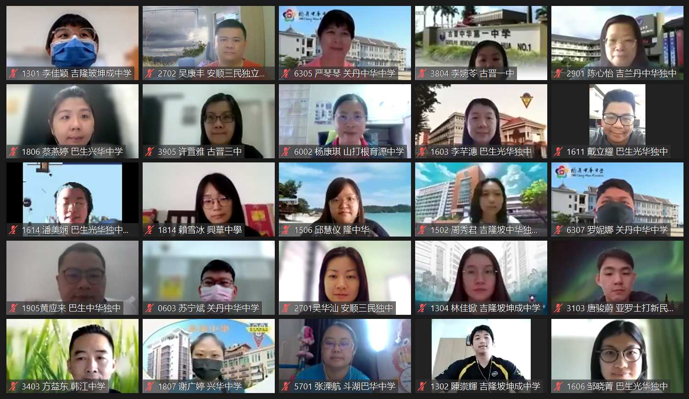

全国华文独中学生事务行政人员成长大会
“2022年全国华文独中学生事务行政人员成长大会”部分出席者合影。为探讨独中学生事务行政工作的相关议题，并提供经验交流的平台，董总学生事务局于2022年9月16日至17日在线上举办“2022年全国华文独中学生事务行政人员成长大会”。大会安排了两场主题讲座、数场专题讲座和交流，以及工作经验分享。同时，当天也公布了首届学生事务行政人员长期服务奖第一梯次获奖名单，以肯定和表扬长期奉献的相关行政人员。
因考虑到教师每天需面对学生，必须掌握辅导知识，所以本次大会主题演讲皆与“辅导”相关。大会邀得致力于发展WISER学校三级辅导模式的国立台湾师范大学教育心理与辅导学系主任王丽斐教授，以及台北市立龙门国民中学前校长陈採卿校长，分别为与会者带来“WISER生态合作取向之学校三级辅导体制之实施”和“学校实践的辅导工作实务经验”两场主题讲座。
王丽斐教授是继2014年后再次受邀和大家分享这些年来推动学校三级辅导模式的经验。辅导人员在校园扮演着举足轻重的角色，但辅导工作无法仅靠个人力量完成，还需仰赖全校上下的合作共同实现。在WISER模式里所包含的三个层面（发展性辅导、介入性辅导和处遇性辅导）中，初级发展性辅导是以全体学生为对象，运用现有的辅导资源，协助学生发挥能力，促进整体发展。她说这需要大家一起合作，也是最具挑战性的工作，初级发展性辅导若做得好，至少有80%的参与者受益，而二级乃至三级辅导的预防工作也将相对轻松。
翌日，陈採卿校长主讲“学校实践的辅导工作实务经验”。她以WISER学校三级辅导作为基础，分享了多年来掌校与推动三级辅导的经验和实例。与初级发展性辅导相符，全方位的辅导教师逐渐朝向全方位学校辅导工作，更注重专业和分工，并以整体团队合作为导向。此外，学校也不忘引进和整合更多外部专业人员资源，配合学校各处室和导师，甚至邀请家长和学生同侪的参与，形成学校生态合作系统。
其他关于辅导、训导、宿舍和联课组别的教师的专题讲座、交流与工作经验分享会，详情如下：
| 组别 | 主题 | 主讲/分享人 |
|---|---|---|
| 辅导 | 学习诊断与辅导 | 台湾国立彰化师范大学辅导与咨商学系博士 林清文教授 |
| 训导 | 后疫情训导行政人员的身心照顾 | 亚罗士打新民独立中学 赖丽萍副校长 峇株华仁中学辅导处 张芮涵主任 训导工作小组委员 |
| 宿舍 | 宿舍导师的角色与界限 | 居銮中华中学辅导组 邹文迪老师 |
| 如何建立宿舍工作团队 | 巴生滨华中学舍务处 陈丽思主任 安顺三民独立中学宿舍处副主任 吴华汕老师 |
|
| 联课 | 筹办校内外联课活动的建议及经验分享 | 吉隆坡循人中学联课处 杨俊伟助理主任 |
| 校内联课活动的分数设定和评鉴方式 | 大山脚日新独立中学联课处 李宗持主任 吉隆坡循人中学联课处 杨俊伟助理主任 |
成长大会共获202人出席。两场关于学校辅导工作的主题讲座，让首次接触的教师们对辅导工作有了初步的了解和认知，也赞同辅导工作需结合全校上下共同努力方得以实现。其他组别的专题讲座和分享也让教师们获益良多，与会者皆可从主讲人和分享人的经验分享中，获得一些启发和帮助。
更多资讯，敬请浏览学生事务局官网（https://student.dongzong.my/）。